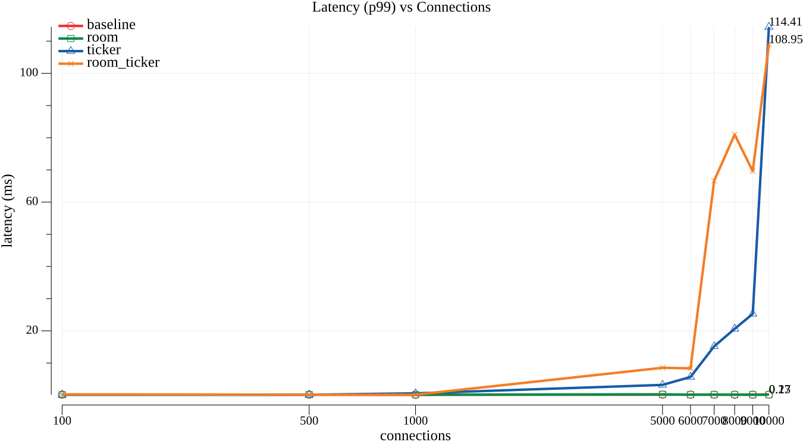
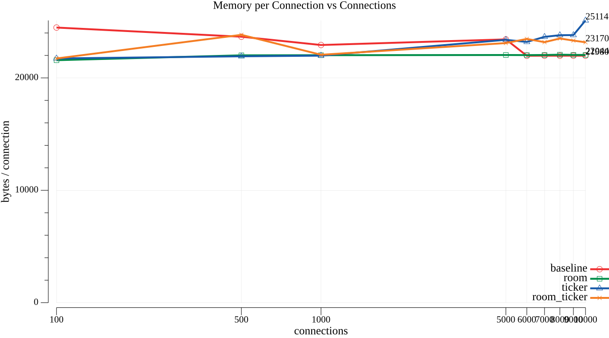
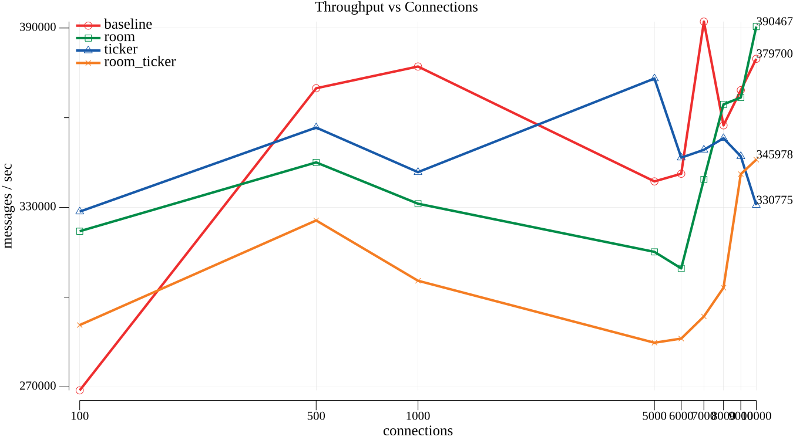
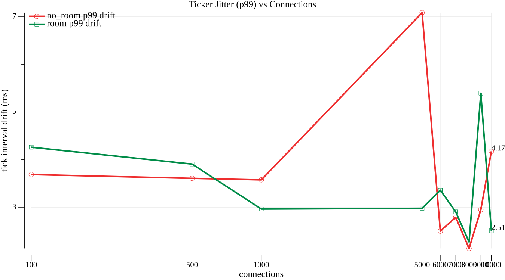

Introduction
What is knet?
knet is a Go library for building game servers and real-time applications over WebSocket. Instead of reinventing binary communication, connection management, and broadcasting every time you start a multiplayer project, knet delivers that out of the box — and stays out of your way for the rest.
At its core, the idea is simple: messages travel as 4 bytes of command ID + binary payload. No JSON parsing on the hot path, no reflection, no layers on top of layers. You register a handler for a command, knet decodes it zero-copy and delivers it to your code. When you need request/response (login, queries, config), JSON-RPC 2.0 is available as an option — not a requirement.
Why this library exists
Building the networking layer of a multiplayer game from scratch means solving, over and over, the same problems: how to send data efficiently, how to group players into rooms, how to sync state without wasting bandwidth, how to keep a stable tick rate, how to keep a malicious client from bringing the server down. These are infrastructure problems, not gameplay problems — and getting any of them wrong costs dearly later, in production bugs at 3am.
knet was created to isolate exactly this layer:
- Binary protocol with command pattern, so you spend bytes only on what matters
roomfor grouping clients (lobbies, matches, zones, chat channels)observerfor interest management — each client only receives updates for what it actually cares aboutsyncvarfor replicating state only when it changes, avoiding broadcast of duplicate datatimingfor running a game loop at a fixed tick rate, decoupled from your simulation's frequency
Each of these pieces is optional. You can use just the base server and nothing else.
Performance and scalability
knet is built on two deliberate decisions:
Binary protocol, zero-copy decoding. The payload that arrives in your handler is the same memory slice received from the socket — no allocating a copy, no JSON serialize/deserialize on the server's hottest path (game message processing, which runs hundreds or thousands of times per second per connected client).
Go's native concurrency. Each handler runs on its own goroutine — Go's concurrency model handles tens of thousands of simultaneous connections without the overhead of OS threads. Per-client rate limiting (token bucket), read/write timeouts, and payload size limits (10 MB by default) protect the server against slow clients, unbounded queueing, and trivial giant-payload attacks — without you having to write any of it.
In practice, this means: a single Go process, running on a modest machine, can handle a concurrent client load that would require an entire fleet in languages with heavier runtimes or OS-thread-based concurrency models.
Low cost
Go compiles to a single static binary, with no VM and no heavy runtime to load. That translates directly into infrastructure cost:
- Fewer machines for the same load — Go's goroutine model processes far more concurrent connections per CPU core than most OS-thread-based alternatives
- Less memory per connection — a goroutine costs a few KB of initial stack, not MBs of thread
- Simple, cheap deployment — a static binary with no runtime dependencies, runs anywhere
- No license fee or proprietary runtime — Go and knet are open source, MIT license
The practical result: you pay for real CPU and memory, not for platform overhead. For a multiplayer game that needs to scale from a handful of players to thousands without rewriting the network stack, that's the kind of savings that adds up month over month.
Who knet is for
If you're building anything that needs:
- Shared state between multiple clients in real time (multiplayer games, collaborative rooms, live dashboards)
- An efficient protocol that doesn't waste bandwidth on text overhead
- A foundation that scales without requiring an architecture rewrite as user count grows
... knet was made for you. It doesn't try to be a game engine, nor does it impose ECS architecture or fixed ticks by default — it's the network layer, and only that, built to be fast, predictable, and cheap to operate.
Benchmarks
knet ships an automated benchmark suite (.benchmark/ in the repo) measuring latency, memory per connection, throughput, and Ticker jitter across 100 to 10,000 concurrent connections — with and without RoomManager and Ticker enabled. (10,000 is the practical ceiling for a single-machine, single-loopback-IP test: each client connection needs its own ephemeral source port, and the OS's local port range runs out well before 50,000 — see the suite's README for details.)
Latency (p99) — round-trip echo time vs connections, one line per scenario (baseline / room / ticker / room+ticker)

Memory / connection — heap bytes per client, isolating the fixed cost room/timing add on top of a bare connection

Throughput — messages/sec the server sustains, measured server-side via the knet_msg_received_total metric

Ticker jitter — p99 drift between a tick's actual fire time and its configured interval, comparing plain Register against RegisterRoom (which also broadcasts)

See the benchmark suite README for how to reproduce these numbers.
Next step
Ready to see the code? Head to Getting Started and spin up your first server in a few minutes.